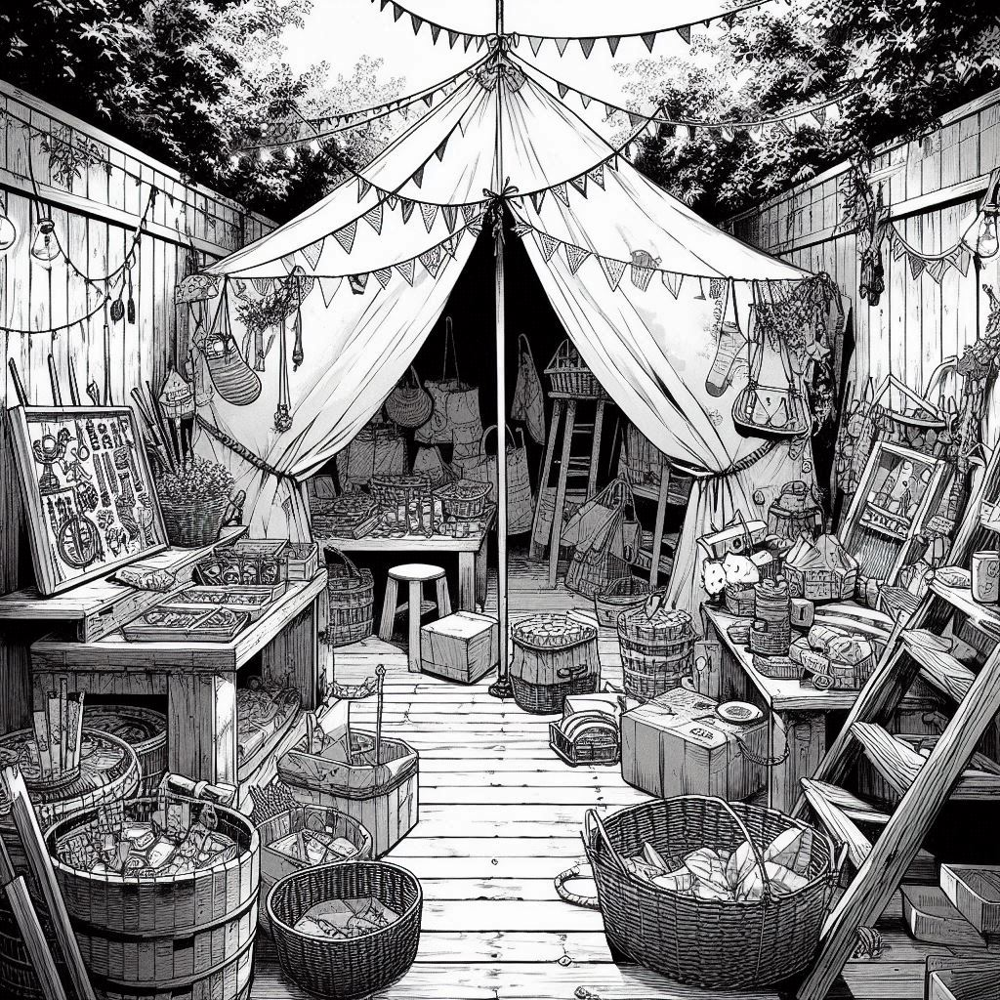
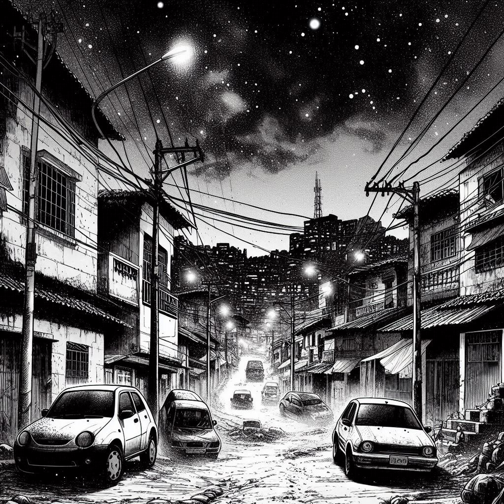
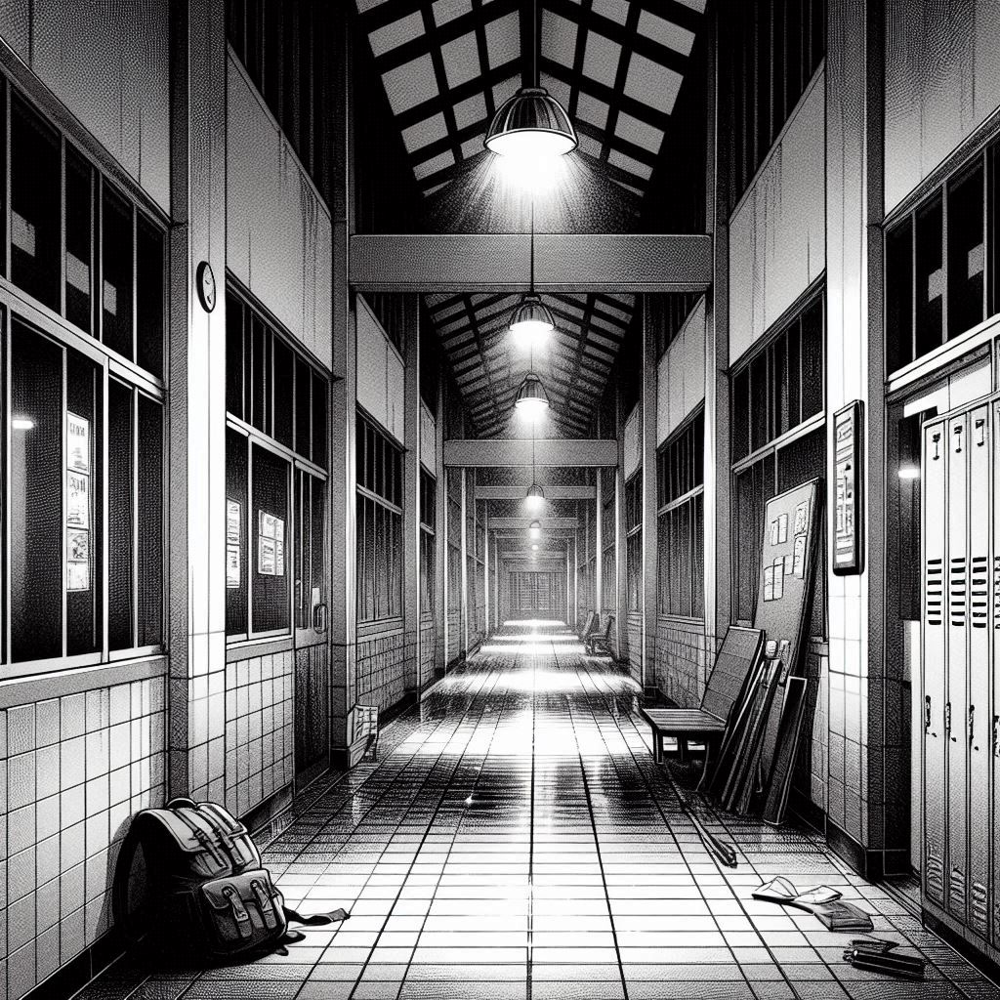
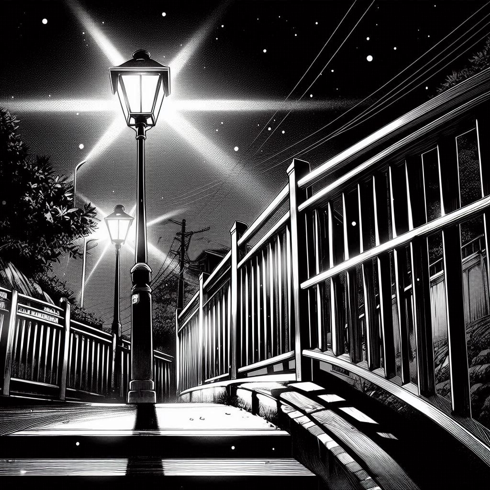

Aqui em Fleimin você estará prestes a acompanhar uma história de aventura criada com muito carinho por mim, ela está sendo desenvolvida desde 2017 com algumas pequenas pausas e controvérsias hehe....
Espero que gostem deste novo mundo, e agradeço por terem dado uma chance a está criação!
Aviso: Na caixa de diálogo, sempre que o personagem estiver pensando um * será exibido logo após o -* Fulano está achando que estou brincando
Sombras na Multidão
Musica: Confetti - Ghost
Irei lhes contar a minha vida de um jovem de 17 anos com uma aparência modesta possuindo um cabelo castanho, pele parda e olhos castanho escuro.
Em dados momentos, me sinto ser tão chato que não consigo ver um motivo pelo qual alguém iria querer se envolver comigo. E francamente, não me preocupo com isso. Isto é... As vezes estou preso na escuridão de meu quarto ou hipnotizado por alguns pixels coloridos apenas lamentando o vazio existente em mim.
Mas quem se importa? Afinal, não estamos na era da ansiedade e futilidade?
Diariamente, tenho minhas crises de carência onde apenas desejo estar com alguém, fazendo ou vivendo algo. No entanto, sinto como se houvesse um bloqueio em minha mente que não me permite fazer nada além daquilo que já me foi proposto a passar.
Normalmente, sou aquele tipo de pessoa com poucos amigos (nenhum). Sem vida social, me limito a uma vida em um esburacado sofá velho com um Samsung S3 em mãos. Quando está frio adoro colocar os pés no buraco e se aquecer na espuma ao invés de uma boa e velha meia. Nem preciso dizer o que minha mãe acha disso, né? Sempre que isso acontece, ela me faz lembrar de como me sinto uma casca vazia que boia em um riacho detido por uma represa de lixo.
Mãe- Por que você não faz nada do que lhe peço? Eu já estou cansada disso! Eu não tive um filho para ficar vagabundeando o dia inteiro no sofá! Eu- Mãe...!? Me deixa em paz! Eu não vou fazer merda nenhuma! – Falo em um tom de arrogância como sempre faço.
Não demora até com que ela tenha um chilique nervoso e eu comece a tentar me esconder em algum lugar da casa. Normalmente, meu "esconderijo" favorito é o fundo da casa, uma vez que ela me descobriu dentro do guarda-roupas e acabei levando uma palmada no rosto que até hoje o brilho das estrelas não me abandonaram. Para minha felicidade, eu só preciso passar por esta dor de cabeça durante os finais de semana, pois é quando a folga deles acontece.
Os fundos é quase como se fosse o território marcado de meu pai, e um ponto estratégico para mim. A partir do momento que coloco os pés lá, o silêncio deve reinar, até mesmo minha mãe se chegar surtada lá, ela irá respeitar o ambiente. Ele sempre teve o costume curioso de passar seus fins de semana criando "artesanatos" indo desde pulseiras bem elaboradas, até enfeites de parede e teto. A varanda do quintal parece uma verdadeira tenda de feira.
Chega ser muito bonito possuindo muitas cores e artesanatos diferentes, as vezes chega até atrapalhar quando precisamos fazer alguma coisa por lá. Meu pai é o tipo de pai mais negligente que já conheci, enquanto minha mãe me persegue questionando cada pequena coisinha que faço, ele é o total oposto. Eu já nem arrisco mais ter uma conversa com ele, pois sempre que tentei ele acaba por ficar bravo dizendo para eu calar a boca e não tirar a concentração dele. Partindo disso posso dizer que minha infância foi um tanto quanto complicada. Meus pais por algum motivo me mantinham trancado dentro de casa durante todo o tempo que eles estavam fora por conta do trabalho. Cresci e vivi aprendendo a como passar o tempo estando só. Ou quase isso. Sinceramente, não sei como uma criança sozinha em casa não acabou se matando com alguma coisa da casa.
Provavelmente você deve estar se perguntando agora "meu deus, como ninguém nunca chamou o concelho tutelar para essa criança?" e a resposta que lhe dou é:
Não tinha ninguém preocupado o suficiente para fazer isso, pois meus pais mudaram de estado comigo sendo criança indo parar direto em uma periferia onde os vizinhos mais pareciam assombrações em suas casas, do que realmente pessoas.
Um bairro cheio de vielas com portinhas em meios paredões que dão acesso a sobrados de casas... Sim, está é a faixada de minha atual casa. Desde pequeno, me acostumei com o barulho de pessoas fornicando na escuridão da madrugada que a viela proporciona.
Dificilmente tenho uma "noite de sono", isso está mais para lá de ser uma expressão do que um termo. A malícia é algo que adentrou muito cedo em minha mente, não que hoje eu seja algum tipo de pervertido, mas com certeza acabou por me fazer ter uma visão distorcida da malandragem adulta.
E quando me refiro com distorcido é no sentido de que essas coisas beiram a "normalidade", coisa que nunca deveria ser trabalhado na mente de uma criança.
Quando a puberdade finalmente chegou para mim, já não havia mais nada de novo além dos meus hormônios querendo me levar para o mal caminho.
Minha infância foi repleta de bullying e isolamento. Por algum motivo eu tinha uma certa dificuldade de falar com os outros, o que acabava se tornando um prato cheio para criarem conclusões de mim.
Lembro-me de um tempo em que os professores tentavam a todo custo rastrear meus pais por notarem que algo estava de errado comigo, mas bastava uma "repreensão personalizada" de meus pais para com que me fizesse mudar completamente meu comportamento e fingir que estava tendo bons cuidados.
Por incrível que pareça funcionou! Por um tempo... pois logo meus pais tiveram que começar aparecer na escola por causa das minhas confusões...
Com o tempo, meu lugar favorito que era os fundos da casa onde podia olhar o céu e brincar logo foi dando lugar a um teto branco e trincado.
Junto disso veio os pensamentos ruins...
Assim como o celular mudou o mundo, ele também me mudou.
-* Meu celular... É aqui, nesta pequena tela onde vivo as minhas aventuras. Tudo o que eu preciso está no alcance das minhas mãos.
Agora, já perdi a conta de quanto tempo faz que se confinei em uma vida virtual, desde a primeira vez que peguei este S3 na mão, minha vida mudou.
Se não fosse a escola, quero nem imaginar quanto tempo levaria para sair de casa outra vez.
Lembro de quando tive minha primeira e última paixão na escola. Ela era linda, longos cabelos loiros, olhos claros como um favo de mel fresco e uma simpatia de sedar feras.
Fui de 0 a 100 quando tomei coragem de falar com ela e viramos amigos, logo eu, o que se achava o mais esquisitão da escola.
Infelizmente, minha felicidade foi proporcionalmente convertida e multiplicada em 3 passando ser raiva e tristeza.
A repressão que meus pais causavam em minha mente, acabou por criar um constante medo de sair fora da linha.
Logo, quando começamos a se conhecer melhor e ela passou a saber como minha vida e meus pais eram, senti quase como se tivesse instantaneamente derrubado um pote de sal dentro da panela de arroz.
Aos poucos de uma paixonite, logo se tornou em uma amizade cada vez mais distante, chegando ao fim da linha com ela passando a me bolinar com os moleques.
Tolerar o Bullying dos moleques era uma coisa, pois eles não sabiam absolutamente nada sobre mim, mas agora, ela? Isso ardia como álcool nos meus machucados.
Sentindo-me a pessoa mais vazia que respira, sem nada que desperte a minha alma, regressei aos meus dias de solidão sem luz.
""Mas, como nem tudo na vida são espinhos""
Eu tinha um lugar para voltar e dormir, meus pais nunca me deixaram faltar comida na mesa, sempre que precisei esconder meus surtos deprimentes de estresse, nervoso, ansiedade, raiva e longas conversas a sós, tive meu cantinho. Oh, parece que me empolguei contando mais do que precisava. Bem, voltando aos meus dias atuais. Quando eu não estou vivendo uma "aventura" em minha telinha, provavelmente, eu estava ouvindo algumas músicas que me fizessem sentir estar sendo compreendido de alguma forma.
Por mais que nunca tenha entendido nada do que era dito, o que sempre valeu foi receber de volta a água que era pega de volta no fundo do poço. Me irrita o fato de que meu corpo sempre levou vantagem contra minha mente, ou pelo menos, tento me enganar que é isso. Em suma, mesmo que passe a maior parte do tempo achando ter uma vida miserável, sempre fui conformado com ela. Nunca fui o tipo de pessoa idealista e que sonha em fazer grandes coisas. A ideia de uma vida confortável e sem perturbações sempre me agradou.
"Mal sabia eu o que estava por vir"
No meu "aprendizado" na escola, eu sempre me senti quase que abençoado, e provavelmente deveria ser o melhor aluno da sala. Não é como se bastasse eu simplesmente querer fazer e esperar que a nota viesse.
Durante a maior parte do tempo acabo passando as horas debruçado na carteira tentando compensar as horas de insônia perdidas.
Quando estou na escola, nas ruas e em casa. Se por algum motivo eu ficar sem o celular fico desesperado, estressado e inquieto. O problema se torna a cada dia bem mais sério.
Como havia dito, nem tudo são espinhos. Minha mãe sempre se preocupou em me tirar do vício e me influenciar a fazer algo diferente. O problema é que nós dois não temos uma conexão, e é quase que impossível.
Além dela sempre estar fora de dia e eu na escola a noite, quando nos vemos, temos apenas assuntos pendentes a resolver.
Nos longos anos de desafeto acabei por ter um coração frio e apático que me faz tratá-la com arrogância... Talvez, meu coração seja de aço.
Duro por fora e mole por dentro. O que acaba por me custar a única pessoa que poderia estar próxima de mim.
No atual momento, estou como de costume sozinho no meu sofá ouvindo minhas músicas. Estranhamente hoje eu estou se sentindo mais ansioso que o normal. Estou com a impressão de que estou esquecendo algo muito importante e por algum motivo não lembro.
De qualquer forma, deixo isso de lado e sigo com meu dia seguindo minha rotina preguiçosa de assistir vídeos e jogar.
Sempre quando estou sozinho em casa eu costumo ouvir barulhos estranhos, coisas estalando, sons de arrastar ao longe e todo tipo de coisa que costumamos imaginar.
Nunca liguei muito para essas coisas, além de ser bem cético em acreditar em coisas de outro mundo. Dado que, esse tipo de coisa acontece com frequência, ao beirar o final do dia eu escuto algo cair no pequeno cubículo dos fundos.
Parece ter sido algo grande, pois pude identificar bem o som e sei que não é algo normal. Curioso eu vou até lá ver e.....
Nada está aqui, apenas um gato que estava passando pelo muro e logo se esconde ao me ver Nada está aqui, apenas um gato que estava passando pelo muro e logo se esconde ao me ver. Quando estou prestes a voltar para dentro de casa me deparo com uma pequena luz verde translucida que circunda meu corpo em uma velocidade altíssima, eu me sinto enjoado por um breve momento que logo passa assim que ela some junto com o enjoo.
Fico perplexo com tal experiência estranha, fato é de que não durmo bem na maioria dos dias, mas não sabia que esse tipo de coisa causava alucinações.
Ainda sem compreender muito bem o que foi isso, eu tranco a porta e volto para meu sofá tentar esquecer o que aconteceu comigo.
Quando finalmente esqueço isso, já está dando a hora de ir para escola. Habitualmente, enquanto me preparo é quando meus pais chegam, e quando eles chegam costuma ser estressante, pois ficam sempre me cobrando de coisas que deixei de fazer durante o dia.
Eu não tiraria a razão dos dois... Se não fosse pelo fato de que ao acontecer isso, as chances de eu passar perto deles e acabar levando uma cintada ou coice, são grandes, assim como já aconteceu inúmeras vezes.
Em geral, se eu conseguir sair antes deles chegarem é melhor, e como chego só depois das 23:00 (11:00pm) em casa, os caço em um sono bem profundo para já acordar e sair cedo para trabalhar.
Por vezes, na ocasião que isso ocorre, eu paro um pouco à frente da porta aberta do quarto deles e fico os observando um pouco imaginando como minha vida seria se eu fosse embora de casa ou eles morressem.
Atualmente, estou com 17 anos e fico nervoso sempre que penso nessa possibilidade, pois percebo que acabei criando muita dependência na casa deles e não consigo me ver se virando lá fora.
Frustrado, eu troco de roupa e saio sem vê-los. No bairro que eu moro não costuma ser muito agitado, mesmo assim a escola conseguiu a proeza de estender seus horários até as 22:30 (10:30pm). Normalmente, este bairro costuma ser tranquilo de dia, porém, por se tratar de um lugar retirado, a noite é um pouco mais preocupante.
Estranhamente as ruas hoje estão vazias, e não faz muito tempo que passamos pelo carnaval, me pergunto, onde estão os varredores?
Algumas vezes enquanto ia para a escola eu cheguei presenciar pessoas sendo assaltadas, principalmente sendo pelo modo "dois homens em uma moto" por mais que o meme seja real, é infeliz o fato de você se preocupar sempre que vê dois homens em uma moto.
Apesar de tudo existe algumas formas que reduzem significativamente as chances de ser abordado, e uma delas é se limitando ao máximo possível parecer que está com algo de valor.
Chinelos de dedos, roupas simples e andar sempre atento são bons fatores. Ratos reconhecem outros, e sabem que não vale o esforço de surrupiar migalhas.
Mesmo assim, ainda tenho a facilidade de fugir pulando muros e entrando em quintais, coisa que até então não tive a necessidade de fazer.
Durante minha caminhada de meia hora para a escola, que acontece todos os dias, passo a ouvir um grupo de rapazes se aproximando por de trás de mim.
É neste momento que sinto um intenso frio começar percorrer meu estômago e se espalhar em forma de tensão para meus músculos, eu acabo de lembrar o motivo de ter passado o dia sentindo que algo estava errado.
Antes mesmo que eu pudesse correr, eles já passam correndo ao meu lado como jatos cortando os céus.
Eu os encaro como se estivesse vendo uma assombração que vem me perturbar novamente.
Eles são a "Turma do fundão". Normalmente, eu não teria problemas com ninguém da escola, contudo, ontem houve prova e eles me pediram a resposta, eles já vinham fazendo isso de outras vezes, com medo de arrumar confusão acabei cometendo o erro de passar respostas. Dito isto, ontem (Quinta-feira) eu estava sem paciência e xinguei eles além de entregá-los para a professora.
O que eu não contava era que a professora iria puni-los deixando sem nota nesse trimestre. Eles ficaram loucos de raiva, e eu a princípio, nem me importei. Agora na (Sexta-feira) aparentemente eles vieram acertar as contas comigo...
Eu- Eae rapaziada, o que vocês querem comigo?
O rapaz que lidera o grupo é um repetente um pouco maior e encorpado que eu, também ele é de maior e já possuí uma tatuagem com letras no rosto, os outros 3 rapazes possuem uma média de estatura de 1,75m assim como eu.
Todos são da mesma sala que eu, um deles leva entre os dedos um cigarro de maconha que eu notoriamente reconheço pelo cheiro.
Junior- Aê tiozão, você não pense que a gente se esqueceu a merda que você fez ontem!!
Eu- Merda? Que merda? Não sei do que vocês estão falando... Pensei que vocês tivessem de ter cobrado na saída de ontem.
Junior- Fomo resolve outra parada onte, tu tá muito engraçadinho pro meu gosto.
Enlouquecido com o que acabo de falar um deles puxa o estilete do bolso e aponta para mim.
Jean- Não se faça de idiota, você vai pagar por ontem!!!
Durante minha vida na escola, aprendi lidar com esse tipo de situação de duas formas diferentes. Uma, é ficar quieto e ceder o desejo de quem incomoda. E a outra é cair na porrada.
De certo eu já apanhei e levei advertências neste meio tempo, porém, a situação agora mudou.
Antes eu enfrentava garotos comuns que com uma boa discussão e uma troca de socos, já se resolvia qualquer indiferença, mas agora, estes caras vão além dos limites de uma pessoa qualquer.
Agora que a merda foi feita, apenas me restou uma coisa.
Eu- Me peguem se puderem seus merdas!
Junior- Agora tu tá fudido maluco. MATEM ELE!!!!!
Eu corro como se não houvesse o amanhã, minha mochila pula tanto em minhas costas que eu sinto como se o peso fosse me levantar para o alto.
Durante a corrida eu me distancio permitindo tomar a atitude estúpida de parar e arremessar uma pedra do chão com um único rodopio.
A pedra acerta a perna de um deles causando ainda mais discórdia e alvoroço.
Cansado, eu paro de correr a beira de um terreno baldio que está cercado de entulhos chão a fora.
Jean- O pau de barraca parou, desmonta ele!
Na rua que estou, não vejo um gato pingado, além de estar esvaziado de energia e fôlego.
Eu cato um cabo metálico de vassoura e armo como uma espada para lutar.
Junior- Você não está achando que vai nos acertar com isso aí, né?
Marcos- Vamos arrebentar você na porrada!
Jean- Não, vamos matá-lo! – De todos é o que está mais louco e com certeza não está muito consciente do que está fazendo.
Eu- VEM PRO PAL!!!
Eles chegam aos chutes e socos comigo erroneamente tentando se esquivar.
O bastão de metal me ajuda a mantê-los afastados e acertar a mão do Junior que portava o estilete o fazendo derrubá-lo.
Gritos e gemidos ecoam por toda a rua, fazendo com que a atenção despreocupada dos moradores seja atraída. Todos que vêm um bando de rapazes me atacando ficam abismados e amedrontados, fico me perguntando quando alguém irá me ajudar e ... nada.
Começo a entrar em desespero e gritar por ajuda, os garotos se divertem e deixam de tentar me agarrar para me fazer de bola sendo jogada de mão em mão em uma rodinha.
Depois de apanhar consideravelmente, dois caras que estavam assistindo de camarote na garagem finalmente saem para me ajudar.
Um deles tem a minha altura, mas seu corpo equivale a 3 do meu. Junto dele está um outro cara careca por volta de 1,90m, já ele é bem forte e musculoso.
Os dois homens chegam e desferem socos tão fortes que os garotos caem de primeira no chão, nem mesmo o golpe que dei com o cabo de vassoura parece ter surtido tanto efeito quanto o soco, ao perceberem que não teriam mais chances contra os dois eles saem correndo como cães com o rabo entre as pernas.
Eu- Obrigado por me ajudar.
Homem- O que aconteceu aqui?
Eu- Aqueles caras estavam querendo me bater por uma coisa que aconteceu o outro dia.
Homem- E parece que conseguiram, olha só para este nariz sangrando, você deveria ir para casa.
Eu- Tá tudo bem, isso não foi nada.
Homem- Não! Não está nada bem! Suas roupas estão rasgadas e seu corpo todo ralado.
Eu- Eu dou um jeito!
Homem- Quem são seus pais? Vamos, eu te ajudo a ir para casa.
Eu- Eu não sou mais criança!!
Noto que o homem começa a barrar meu caminho na tentativa de me segurar, eu saio correndo de imediato ao mesmo tempo que eles tentam me parar. Em meu coração estou morrendo de medo de me encontrar com aqueles caras de novo, mas por outro lado algo me move para enfrentá-los mais uma vez.
Ódio me cega, pois a dor que sinto eu conheço bem, é a mesma dor de todas as vezes que eu briguei e levei uma surra de meu pai.
Minha vontade agora era de pegar outro pedaço de ferro e ir atrás dos caras para descontar toda minha fúria. Tão pouco estava me importando com a possibilidade de acabar sendo morto ou lesado.
Se você me perguntasse agora, provavelmente diria que preferiria morrer lutando do que não fazer mais nada e apenas aceitar.
Com isso em vista, minha mente começa a rebobinar os poucos segundos atrás em que eu estava gritando por ajuda.
Começo a chorar e se desesperar em uma mistura de angústia e raiva. Perdido em meu conflito interno, eu pego uma ripa de madeira que fora largada de um sofá velho e abandonado na calçada.
Na posse da ripa eu corro pela rua acertando coices desenfreados em tudo o que encontro pela frente: Latões, Portões, Muros e Postes.
Quando o ataque de fúria passa, começo a reparar em meus cortes e ralados distribuídos pelo meu corpo.
Preocupado, eu trato de ir direto para a praça e tentar me arrumar com ideia de ir à escola, chegando lá as poucas pessoas que circulam com seus cãezinhos através dos jardins, me encaram de forma espantada e receosa ao ver aquele garoto todo sujo e machucado.
Em poucos segundos eu uso a água de uma torneira pública para me limpar e arrumar meus cabelos. Minha roupa manchada de sangue logo é tingida com uma porção de barro feito a partir do jardim. Uma desculpa perfeita para conseguir chegar à escola.
Com certeza eu deveria desistir de ir à escola e voltar para casa a destino de me cuidar melhor.
Porém, eu sei que se eu chegar lá nesse estado, e meus pais me virem, eles irão querer saber o que aconteceu. E se eles souberem que eu não fiz a coisa certa, será ainda pior.
Sendo assim é mais fácil esconder tudo na hora que eles estiverem dormindo. A partir deste ponto, minha mente se tornou lesada, e já não consigo mais raciocinar, todo esse tempo suportando provocações e humilhações agora explodiu. Dado a gota d'água, estou para fazer algo idiota caso alguma coisa me provoque.
Chegando no portão da escola, o porteiro me barra perguntando o que são esses machucados e roupas sujas, eu digo a ele que acabei caindo enquanto corria atrasado para a escola.
Seu Zé- Garoooto! Eu conheço muito bem quando um rapazinho da sua idade mente.
Eu- Mas é verdade!
Seu Zé- Humpf.... Tá bom. Eu não quero nem saber dessas suas brigas de rua. Vem comigo, eu vou te emprestar um uniforme e você diz que fez esses machucados andando de bicicleta.
Eu- Oooohhh aí sim em! - Reajo em espanto.
Seu Zé- Há há, eu também já fui um rapaz arteiro meu bom garoto.
Durante nossa breve caminhada com o pessoal do pátio nos observando eu pergunto a ele:
Eu- Seu Zé, não faz sentido isso, você é o zelador, por que você não me entrega para a diretora?
Seu Zé- Eu já conheço a história da diretora indo atrás de seus pais... E sinceramente, não gostei dos rumores que ouvi sobre você após isso.
Eu- Você sabe como são rumores Seu Zé, tudo melhorou depois disso, não foi?
Seu Zé- Não é o que parece.
Eu- Isso aqui foi apenas um acidente de Bicicleta
Seu Zé- Há! Gostou da desculpa né?
Eu- Mas ainda sim, obrigado pela ajuda.
Seu Zé- Ajuda? Não, não, não... Eu sou apenas um velho zelador que não soube cuidar de seus próprios filhos. E não é agora que eu irei cuidar do filho de alguém.
Às vezes, a sinceridade do Seu Zé me assustava, e por mais que ele não fosse muito uma pessoa de se pegar na mão, sempre gostei dele.
Claro, não posso negar os rumores de uma certa relação entre o Zé e a diretora, e se não fosse isso provavelmente ele já não estaria mais aqui.
Estando 20 minutos atrasado eu finalmente chego na sala de aula interrompendo o professor que estava em uma leitura.
Normalmente, um bom aluno entraria pedindo licença. Mas, em meu caso apenas entro com uma cara fechada.
Eu me sento na cadeira e o Professor logo me questiona:
Roberto- E então? Entra... Não fala nada. Por que está atrasado?
Com um olhar igual ao de um cão aborrecido o respondo:
Eu- Caí de bicicleta vindo para cá e me atrasei. Desculpa.
Roberto- . . . – Um silêncio constrangedor acolhe a sala
Junior- A mamãe dele bateu nele Bertão, deixa o moleque quieto
A rapaziada que antes me enfrentara, agora ri discretamente em deboche.
Roberto- A conversa não chegou aí Junior! Alexandro, acompanhe com o seu colega ao lado o que já passei
Depois de duas aulas passadas, finalmente acontece a troca de professores. Os rapazes novamente me cercam rindo e se divertindo.
Junior- Fala! Xândóla. Adivinha só? Sua dívida está paga!
Eu os encaro como uma águia pronta para executar um rasante.
Marcos- Olha isso, parece que ele ainda não aprendeu a lição...
Minhas unhas serrilham a pobre carteira enquanto minhas veias começam a alvoroçar.
Eu- Cala A BOCA!!!!
Toda a conversa na sala silencia-se por um momento seguido de uma vaia em conjunto.
Sentindo-se desafiado, Marcos arma um bote para agarrar meu pescoço. Assim que ele iria atacar a professora chega.
Cristina- VOCÊS AÍ! Já pra mesa.
Cristina é uma professora rígida, e todos na sala costumam respeitá-la sem questionamentos. Algumas pessoas dizem que um dia ela foi uma professora de Biologia, mas atualmente, ninguém nunca a viu dar aula de outra coisa senão matemática.
Murmurando eles retornam para o fundão e a longa aula de matemática se inicia.
Ao término da aula, como de costume, todos saem correndo para o recreio. Alguns vão direto para a fila da comida, e outros ficam em seus grupos de conversa.
Geralmente, eu fico com alguns garotos conversando até a hora de voltar. Mas hoje acabei por ficar isolado em um canto aproveitando meu mal humor.
Como o esperado os 3 encrenqueiros vêm me cercar.
Junior- E aê tiozão?
Jean- Lembra da gente?
Eu- Fale logo.
Marcos- Não temo nada pra fala não, nois te pega na saída, morô?
Os três se viram e vão caminhando despojadamente para a sala largando para trás uma bomba de ansiedade e nervoso em minhas mãos.
As lembranças de mim apanhando hoje mais cedo começam a retornar me causando uma crise de desespero.
Acabo por ter a ideia de fingir pegar comida e assaltar uma faca do conjunto de talheres. É uma ideia torpe, mas a primeira vista parece fazer sentido.
Com muita cautela, na hora que volto para a sala, guardo a faca em um dos compartimentos da minha mochila.
As aulas retornam e tudo parece ir bem até chegar próximo do fim...
Repentinamente, Cristina, aparece na sala com a diretora declarando que o celular dela foi roubado por alguém, em uma ação conjunta todos começam a se olhar.
*- Mais que merda, quem foi burro o suficiente para roubar justo o celular da professora? Se fosse de alguém da sala a direção não estaria nem aí.
O silêncio se sobre saí através da sala, restando apenas os resmungos zangados do Zé falando para alguém não correr no chão molhado.

Cristina- Pessoal, meu celular sumiu desde a aula que dei aqui, e esperei até agora para ver se alguém tomaria vergonha o suficiente para vir me devolver.
Cristina- Pessoal, meu celular sumiu desde a aula que dei aqui, e esperei até agora para ver se alguém tomaria vergonha o suficiente para vir me devolver.
Diretora- Classe, isso é muito sério! Se quem foi se entregar, agora! Tornará as coisas mais simples. – Enfatiza ela, deixando do clima escolar quase um tribunal.
Cristina- Está é a última chance, se ninguém se pronunciar, a polícia virá fazer uma revista.
Junior- Dona.... – Diz ele em um semitom de deboche.
Toda a sala olha para trás em um ávido espanto, inclusive ela.
Cristina- Que bom que você tomou a decisão certa, agora, pode me devolver Junior!
Junior- Hi hi!!... N-não, não dona!!! Que isso, foi eu não.
Cristina- ISSO AQUI NÃO É BRINCADEIRA!
Junior- Calma dona, eu sei quem foi
Cristina- QUÊM?
Diretora- Calma Cristina, nós já vamos resolver isso! E então, quem foi?
Junior- Foi o Alexandro, eu o vi pegando na hora da saída para o recreio.
No momento que ele termina de proferir tais palavras, um ódio profundo e reprimido incendeia minha alma a corrompendo e transformando todas as frases dos demônios em uma só "verdade" sólida.
Antes de quaisquer reações corro para vasculhar minha mochila e lá está. O celular da professora instalado bem ao fundo da mochila para com que eu não pudesse ver.
Lentamente, ergo minha cabeça visualizando todos me olharem em confusão, até mesmo a Cristina não parecia se convencer do que acabará de ouvir.
Como uma agulha riscando um espelho, o riso deles calam em minha mente gerando uma discórdia mental ainda pior.
Eu abaixo a cabeça e começo retirar lentamente o celular de minha mochila, quando todos o vem, aspiram em surpresa e desprezo.
- Sim, fui eu mesmo que roubei, to de saco cheio dessa vaca gritando com a gente o tempo todo. – Falo enquanto minha expressão de desespero se fecha em raiva.
Alguns de meus colegas mais chegados se surpreendem e protestam contra a acusação.
Durante o tempo que todos estão vidrados no celular, minha outra mão corre de volta para dentro da mochila.
Eu arremesso o celular para a professora igual a jogar uma bolinha de tênis para uma criança, Cristina grita e salta em direção ao aparelho.
Com todos distraídos eu me levanto da cadeira e saio correndo para os fundos. Tomo o máximo de cuidado para que enquanto eu corro, minha mão esquerda continue segurando a mochila e mantenha a mão direita ocultada.
Durante os poucos segundos que levei para chegar no Junior, vi sua face em gozo se inverter no mais repleto
No instante que chego a sua frente eu finalmente puxo a faca de cortar bife e lanço contra ele para apunhalar. Pouco antes de acertá-lo ele ergue um pouco os braços, fazendo com que eu me atrapalhe ao tentar acertá-lo.
Eu sou barrado e a ponta da faca encrava no ombro dele, logo em seguida a faca se quebra ao meio ficando apenas o que restou em minhas mãos. Quase que instantaneamente todos na sala, entram em histeria coletiva.
Junior, por sua vez, começa urrar de dor, ele pede por ajuda e as únicas pessoas que poderiam fazer algo, parece estar em choque.
Descontrolado e Aflito, saio correndo para a saída enquanto seus colegas absorvem o choque do que fiz com seu amigo, em minha mente, foi tudo muito rápido e inesperado, quase como se meus músculos pudessem agirem por conta própria.
Na realidade, levou uma eternidade até com que eles reagissem se levantando da carteira e se voltassem a me perseguir.
Entre a porta de acesso da sala e o corredor eu saio para fora já levando um escorregão e batendo contra a parede oposta da porta, como um carro em largada, desliso minha "borracha" dando meu melhor para não cair outra vez.
Seu Zé, como um "narrador" aposentado de briga de rua, grita com sua estridente voz de fumante para sair de seu chão limpo, logo atrás, os garotos se empilham contra a parede criando um replay de minha cena.
Mesmo sem um corpo atlético, consigo tempo o suficiente para escalar a alta grade que circunda a escola.
Chegando ao outro lado caio rolando no chão, assim como meu coração trabalha mais rápido que o motor de um Ford Gt500. Completamente desengonçado começo minha corrida para a escuridão dos becos próximos.
Naturalmente, as ruas neste horário é repletamente vazia, nem mesmo os gatos se interessam em sair em meio frio invernal de junho, minha corrida fadigada faz-me sentir com que o ar arda e derreta meus pulmões como água quente sendo derramada em gelo. Num relance fugaz ao passado, vejo os meninos saltando a grade e sumindo nas sombras, com o coração disparado corro em busca de um refúgio isolado.
Após uma longa fuga, enfim parece que os perdi de vista, as ruas desertas confirmam a minha solidão. Nenhum som, nenhum sinal, nenhuma pista, apenas o silêncio e a escuridão.
Resolvo por me apoiar em um poste de luz e descansar, tudo o que aconteceu retorna como um feixe de luz iluminando minha mente e me lembrando por completo do que acabei de fazer, coloco a mão no rosto e fico apavorado sem saber o que fazer.
De repente sinto uma vibração no ar... Quase como se estivesse esquentando, mas não, é algo bem diferente. Tiro a mão do rosto e olho ao meu arredor, e não vejo nada diferente, começo a olhar o céu e vejo no horizonte da rua um farol aceso. De início penso ser um carro se aproximando, então nem dou atenção, quando ele chega mais perto eu percebo que era muito maior que um simples farol, e ainda estava pairando no ar.
Imediatamente penso em alienígenas e saio correndo em disparada. Como se já não me bastasse ter acabado de fazer a maior cagada de minha vida. Para meu grande azar, é tarde demais e a luz está sobre minha cabeça, assim como nos filmes, uma enorme nave surge repentinamente.
(Aaahh... Como eu me amaldiçoei por estar naquele exato local e momento, é 1.000 vezes mais assustador do que todas as histórias que já escutei sobre Ets)
O objeto voador joga algum tipo de onda sobre meu corpo fazendo-me sentir como se a gravidade do planeta repentinamente duplicasse, se quer consigo me manter em pé. Vertiginosamente, a gravidade começa se inverter não me dando a oportunidade de fugir, eu sou arremessado com violência para o alto e desmaio por alguns momentos. Isso é bem diferente do que passamos a vida escutando sobre Ets. "Uma luz vem e te puxa lentamente" Uma Ova que é assim!
Quando retomo a consciência eu não consigo ver meu corpo, tudo está escuro, desespero começa a me dominar e nada pode ser feito. Semelhante a paralisia do sono, eu não consigo me mover. Minha visão, que antes fora a mais completa escuridão, agora, passa a ser intensos lapsos luminosos e barulhos estranhos. Nunca usei drogas, mas aposto que se usasse diria que isso é bem familiar.
Da mesma forma que, eles surgiram de repente, dissipam-se na obsoleta escuridão que me assola. Retorno a um sono mórbido ao qual você está acordado, mas não consegue abrir os olhos.
-*O que aconteceu comigo?... Eu estava na escola e, e, e... Eu morri, espera!? Por que eu não lembro o que aconteceu comigo depois que saí da escola? Será que sofri um acidente? Será que fui pego pelas costas e morto??? Isto é a morte???
Após um incontável tempo minha mente já não aguenta mais digladiar com a ansiedade e agonia, é como se eu tivesse virado uma consciência em meio ao nada com o simples propósito de estar consciente. Em algum momento após todo este martírio silencioso eu comecei a não conseguir mais decernir o que é existir, o tempo se tornou um todo. Sabe-se lá como isso aconteceu. Milagrosamente, eu acordo deitado no "nada". O sentimento é como o de um broto de grama que nasce em meio asfalto. Pelo menos, se ele pudesse se expressar; diria que com certeza não deveria estar ali.
-*Quê droga de lugar é este? Bem, eu posso me mover
-*Quê droga de lugar é este? Bem, eu posso me mover... Tudo aqui parece ser tão grande e vazio ao mesmo tempo... A luz existe, mas não vejo nenhum sol, aquelas coisas no céu se parecem com nuvens, mas não sei dizer se realmente são nuvens ou estão apenas simulando uma.
A princípio fiquei feliz por finalmente poder me mover outra vez, mas, há algo de muito errado com este lugar. É como se eu simplesmente tivesse perdido o tato de todo o corpo, não posso sentir o chão, mas consigo ver meu reflexo por ele, também estou sem nenhuma roupa ou qualquer coisa que pudesse estar comigo antes de vir para cá, apenas minha mente e meu possível corpo se fazem presentes.
Depois de muito andar e andar e andar, correr e correr. Finalmente decido por sentar-se e apenas ficar parado, ao que aparenta, além de não me cansar, também não sinto mais nenhuma necessidade humana.
-*Qual é o problema deste lugar? Seria isto o que eles chamam de limbo?
Como uma criança triste, abraço minhas pernas e escondo minha cabeça apenas desejando que aquilo tudo fosse mentira.Algum tempo depois, todo o ambiente ao meu arredor se escurece, me deixando na mais profunda escuridão. Contanto, agora, passo me mover por um espaço onde o chão aparenta ser invisível. Nas alturas dos céus vários pontos brancos começam a aparecer como estrelas, estes mesmos pontos são refletidos pelo chão fazendo um cenário único. Maravilhado por todos aqueles pontos brancos, acabo me esquecendo de minha situação por um momento, este alívio logo se torna desespero, ao perceber que eles estão ficando cada vez maiores Maravilhado por todos aqueles pontos brancos, acabo me esquecendo de minha situação por um momento, este alívio logo se torna desespero, ao perceber que eles estão ficando cada vez maiores.
Em um ato de impulso começo correr sem rumo no escuro, mas de nada adianta, as luzes brancas passam a preencher ainda mais o céu. Ao olhar o horizonte vejo uma chuva de feixes brancos caindo como meteoros.
Paro de correr e fico em estado de choque assistindo os feixes se aproximarem cada vez mais, minha mente grita e implora por socorro, como se alguém pudesse me ouvir Paro de correr e fico em estado de choque assistindo os feixes se aproximarem cada vez mais, minha mente grita e implora por socorro, como se alguém pudesse me ouvir... Quando os riscos celestes chegam, pouco antes de me atingirem, sinto uma massa de ar quente se espalhar como um forno de alta temperatura que acaba de ser ligado.
No momento que isso me atinge, eles dilaceram minha carne igual a um açougueiro amador que ainda aprende fatiar. A dor é indescritivelmente insuportável, dinheiro nenhum no mundo poderia recompensar tal sofrimento.
Os 3 segundos que passei por isto se pareceram com 3 horas, não sabia dizer se o tempo estava distorcido de alguma forma ou era apenas minha impressão.
"Tudo se apaga e minha vida acaba"